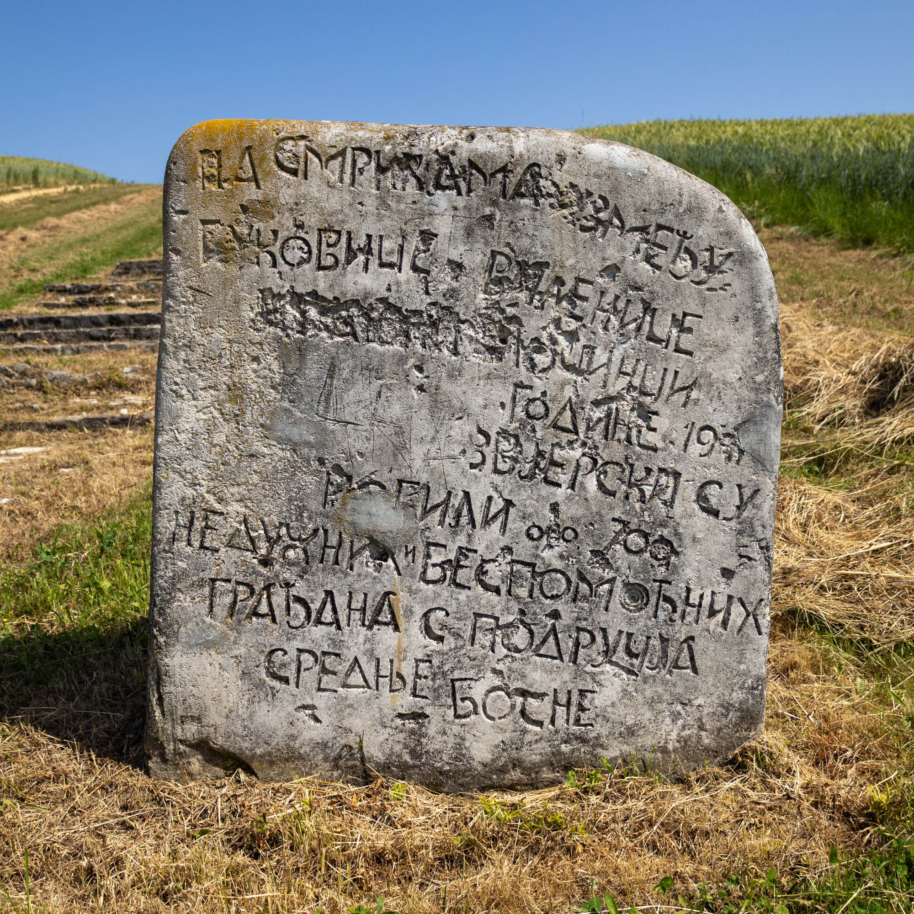

The stone reads: "On Smrike between Bukovice and Vilenice in 1941, Ustaše criminals brutally killed around 700 innocent and defenseless citizens from the region of central Bosnia."
Novi Travnik, Bosnia and Herzegovina
The stone reads: "On Smrike between Bukovice and Vilenice in 1941, Ustaše criminals brutally killed around 700 innocent and defenseless citizens from the region of central Bosnia."
Twelve serpent statues stand guard over the Šmrike Necropolis. Their wide eyes gaze out across the fields near the town of Novi Travnik in rural Bosnia. They stand in pairs, leaning into one another for support, silently guarding the resting place of several hundred civilians massacred by Axis-aligned Ustaše forces. Each serpent’s tail ends in the Ω (omega), symbolising finality and the renewal of a cycle.
What do you see in this spomenik? How does it move you? From the pictures to these words, as the spomenik’s creator Bogdan Bogdanović once remarked, “the monument speaks to everyone.”